În stînga este slide-ul din curs, în dreapta aceeași figură, calculată în browser din aceleași date. Butonul ▶ modifică parametrul pas cu pas.
Varianța realizată · Zgomotul de microstructură · Salturi · Fapte stilizate ale volatilității realizate · Prognoze: HAR față de GARCH · Rough volatility · Studii de caz: învățare automată și varianțe parțiale
Varianța realizată
O zi, 78 de randamente: 7 aprilie 2025
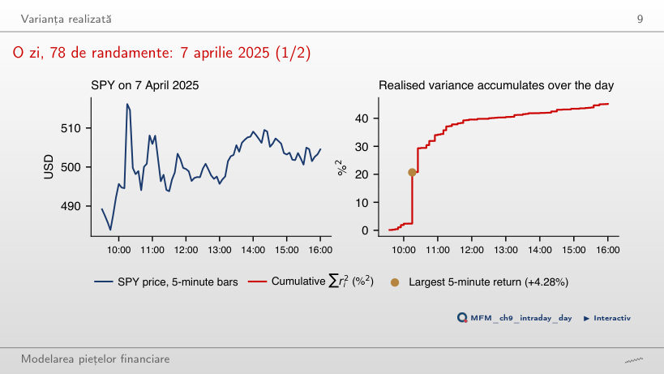
Răspuns
41%. Randamentul de +4,28% din intervalul care se încheie la 10:15 aduce 18,3 %² din RV = 45,1 %². Pînă la 11:00, adică în prima oră și jumătate, se acumulează 76% din RV a zilei.
Volatilitatea realizată zilnică: SPY și Bitcoin
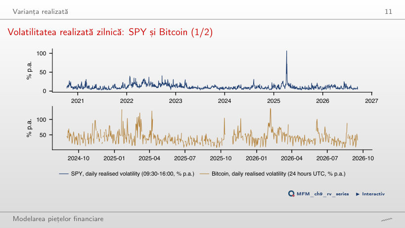
Răspuns
La 11,9%: 20 de zile, adică 1,3% din cele 1 489, ridică volatilitatea calculată din RV medie cu 1,0 puncte procentuale. Media varianțelor este sensibilă la cîteva zile extreme, mediana nu. Pentru Bitcoin, aceleași 20 de zile excluse coboară valoarea de la 45,1% la 41,6%.
Riscul intraday și riscul peste noapte
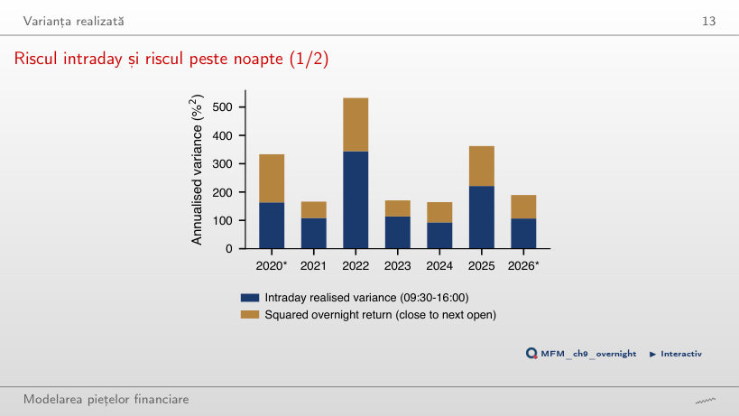
Răspuns
38% pe tot eșantionul, între 33% (2023) și 51% (2020, an incomplet). Ca RV intraday să aibă aceeași medie ca varianța totală, ar trebui înmulțită cu c = 1,62; volatilitatea anualizată crește atunci de la 12,9% la 16,4%.
Zgomotul de microstructură
Signature plot-ul pe date reale
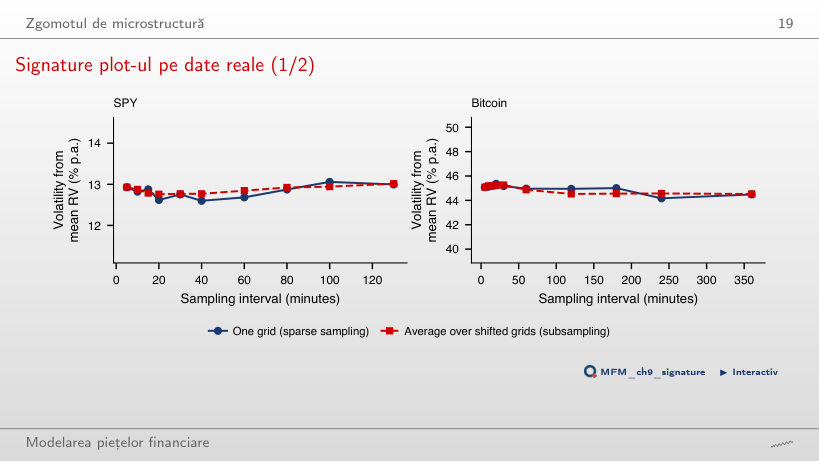
Răspuns
Aproximativ ω = 0,027%: deplasarea 2nω² = 2 × 78 × 0,027² = 0,11 %² pe zi ridică volatilitatea la 5 minute la 14,0%, iar la 130 de minute, cu n = 3 randamente pe zi, aproape nu schimbă nimic. Signature plot-ul real rămîne aproximativ plat, între 12,6% și 13,1%: compatibil cu o deplasare din zgomot la 5 minute mult mai mică, fără să excludă zgomotul.
Salturi
Zile cu salt: SPY și Bitcoin
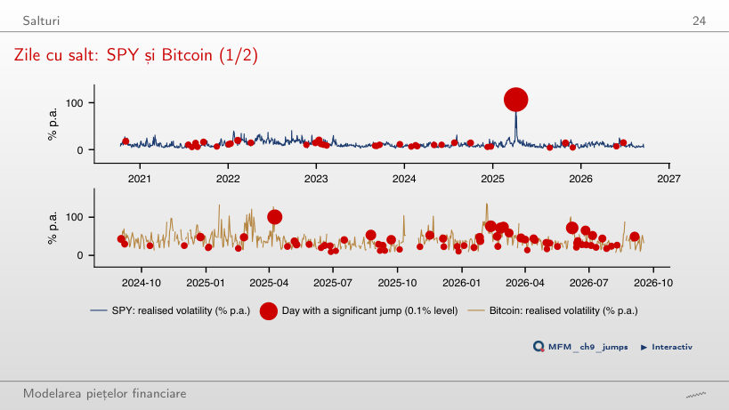
Răspuns
Circa 74 din 1 489; testul dă 236. La 0,1% rămîn 36 de zile, față de 1,5 așteptate fără salturi, iar cu FDR la 5% (Benjamini–Hochberg) rămîn 43.
Fapte stilizate ale volatilității realizate
Distribuții: log RV și randamente standardizate
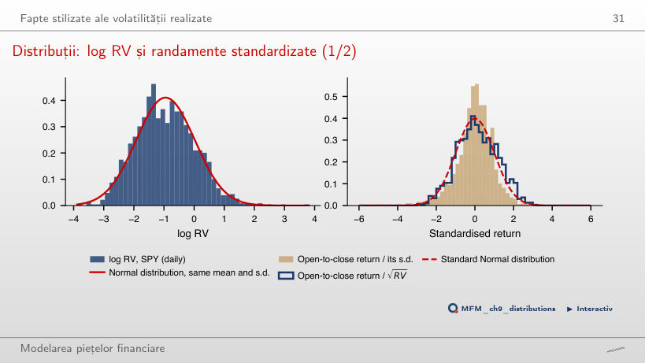
Răspuns
RV pentru SPY are asimetria 20,0 și kurtosis-ul 550, iar log RV are 0,29 și 3,21, aproape de valorile distribuției Normale (0 și 3). La λ = 0,5 (rădăcina pătrată) asimetria este încă 3,9.
Persistența volatilității realizate
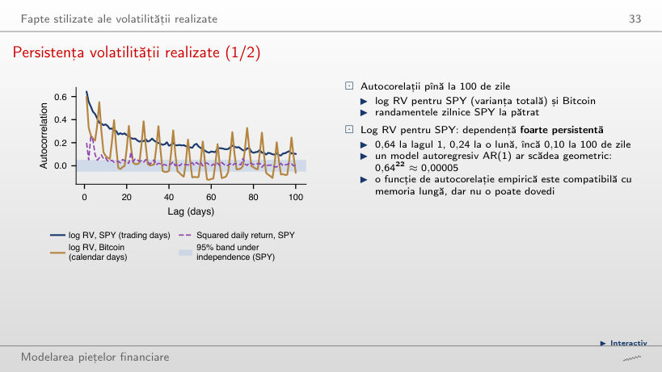
Răspuns
0,64²² ≈ 0,00005, față de 0,24 în date. Modelul log-HAR estimat, privit ca AR(22), dă 0,63 la lagul 1 și 0,24 la lagul 22, ca datele, dar doar 0,02 la lagul 100, față de 0,10: cele trei componente reproduc scăderea lentă pe o lună, nu și dincolo de ea.
Volatilitatea implicită față de cea realizată
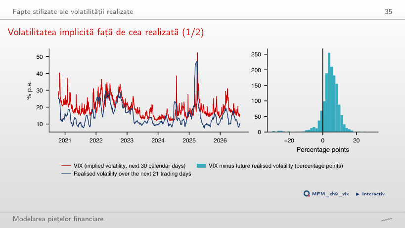
Răspuns
În 88% din cele 1 468 de zile, în medie cu 4,36 puncte procentuale (19,52% față de 15,15%). Diferența rămîne pozitivă în medie și pentru alte orizonturi: 4,84 puncte procentuale la 5 zile, 4,06 la 63 de zile.
Prognoze: HAR față de GARCH
Prognozele în timp
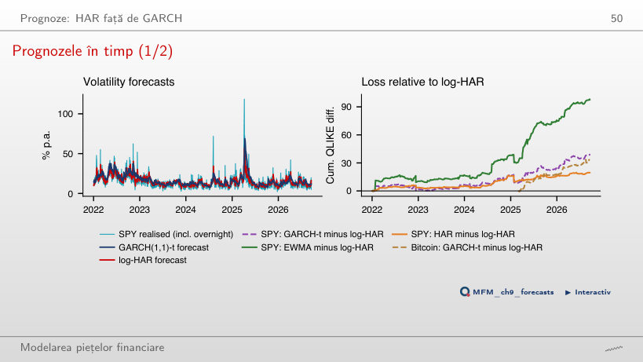
Răspuns
Da. Din 2024, QLIKE mediu este 0,362 pentru log-HAR și 0,409 pentru GARCH(1,1)-t, cu t DM = −2,26. Pe tot eșantionul, din 2022, valorile sînt 0,310 și 0,343, cu t = −2,30.
Rough volatility
Scalarea incrementelor log-volatilității
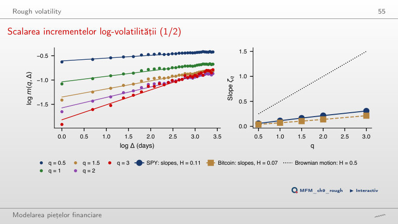
Răspuns
Scade, de la 0,106 (lagurile 1–30) la 0,089. Sub o eroare de măsurare i.i.d., Ĥ ar trebui să crească cînd renunțăm la lagurile mici, deci acest rezultat nu susține explicația prin eroare i.i.d. Pentru Bitcoin, Ĥ trece de la 0,071 la 0,068.
Studii de caz: învățare automată și varianțe parțiale
Studiu de caz: cîștigurile pe orizonturi
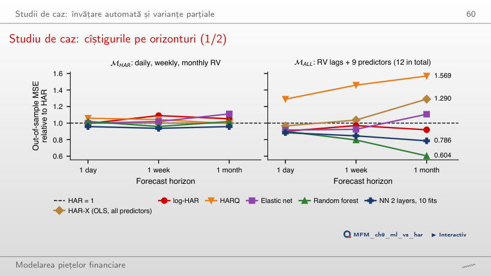
Răspuns
Random forest, cu 0,604 din MSE a HAR, urmat de bagging (0,621). HAR-X, adică OLS cu aceiași predictori, are 1,290, iar HARQ 1,569: liniaritatea și supraajustarea strică prognozele pe termen lung.
Studiu de caz: pierderea în funcție de prag, SPY și Bitcoin
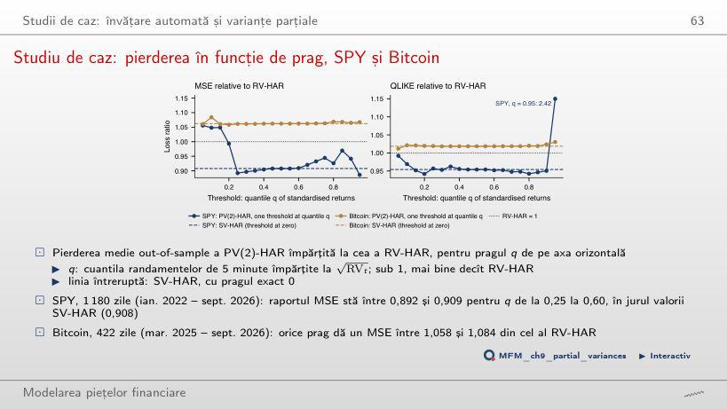
Răspuns
Dispare: fără ele, SV-HAR are MSE 1,240 din cel al RV-HAR, pentru că cele 10 zile aduc 89% din eroarea pătratică a RV-HAR. Cîștigul la QLIKE rămîne: 0,937, față de 0,954 pe tot eșantionul. QLIKE cîntărește erorile relativ la nivelul volatilității, deci nu este dominată de cîteva zile extreme.
SPY: bare de 5 minute din sesiunea regulată din SUA (09:30–16:00, ora New York), octombrie 2020 – septembrie 2026, și randamente zilnice ajustate; Bitcoin: bare de 5 minute pe zile UTC complete, septembrie 2024 – septembrie 2026; indicele VIX. Prețuri EODHD. Primul studiu de caz: tabelele 2–7 din Christensen, Siggaard și Veliyev (2023); al doilea studiu de caz: barele de 5 minute SPY și Bitcoin ale cursului.